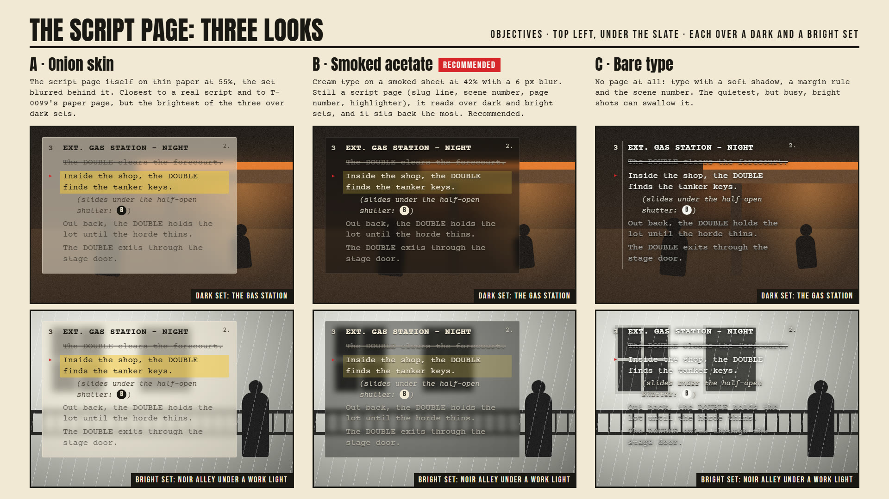
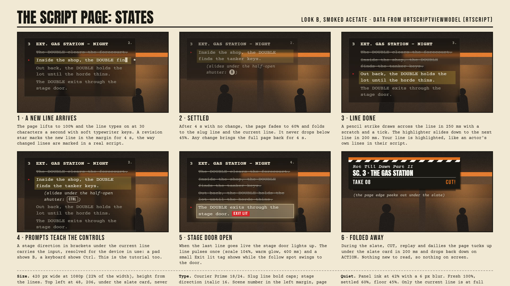

From a playtest note to a script page, in an hour
I said the game needs objectives, styled like a movie script. Within the hour it was a contract for the crew, three Claude Design boards and seven tasks.
Day 1, Thu 12 NovHour 16
The biggest gap from tonight's playtest was that the game never tells you what to do. My note was one sentence: maybe style the objectives like a movie script, so the player is reading the script. This is where that sentence was an hour later.
The idea
Each level is a scene, and a scene has a page. The page has a heading, EXT. GAS STATION - NIGHT, and three or four lines of action. Each line is an objective. The current one is highlighted. Finished ones get struck through in pencil. The player is always "The DOUBLE".
The Director wrote that down as a contract before any code existed, so every session could build against the same thing at once. The contract opens with my own notes quoted back at me, then turns them into data. One level's script is a list of lines, and each line has a type: clear an area, find an item, reach a point, survive, exit.
It also covers the other things I asked for. The red X is gone:
"the stage door lights up: a door frame in the set wall with a lit EXIT sign and bright stage light pouring through."
And so is any idea of a compass:
"A follow spot (a studio spotlight on the rig) swings to point at whatever the current line is about. No compass, no floor mark."
Three looks
While the Director wrote the contract, I took the idea to Claude Design.

A is paper. B is a smoked sheet you can see through. C is bare type with no page at all. Paper is closest to a real script and the loudest thing on screen. I went with B, and moved it to the top left so it sits under the slate and stays out of the fight.
How it behaves

Two details I like. Stage directions in brackets carry the control prompts, "(slides under the half-open shutter)", so the script teaches the buttons and the tutorial becomes a script too. And when nothing changes, the page fades back and folds down to just the current line.
Who's building it
Seven tasks went out: the objectives system to Gameplay, the page itself to UI, the stage door, follow spot and route lights to World, the gas station rebuilt as three spaces, the tutorial rewritten as a script, new sounds for the page, and a validator for the new level data.
None of it is in the game yet. These are drawings and a document. Tomorrow's posts will show how much of it survives contact with the engine.